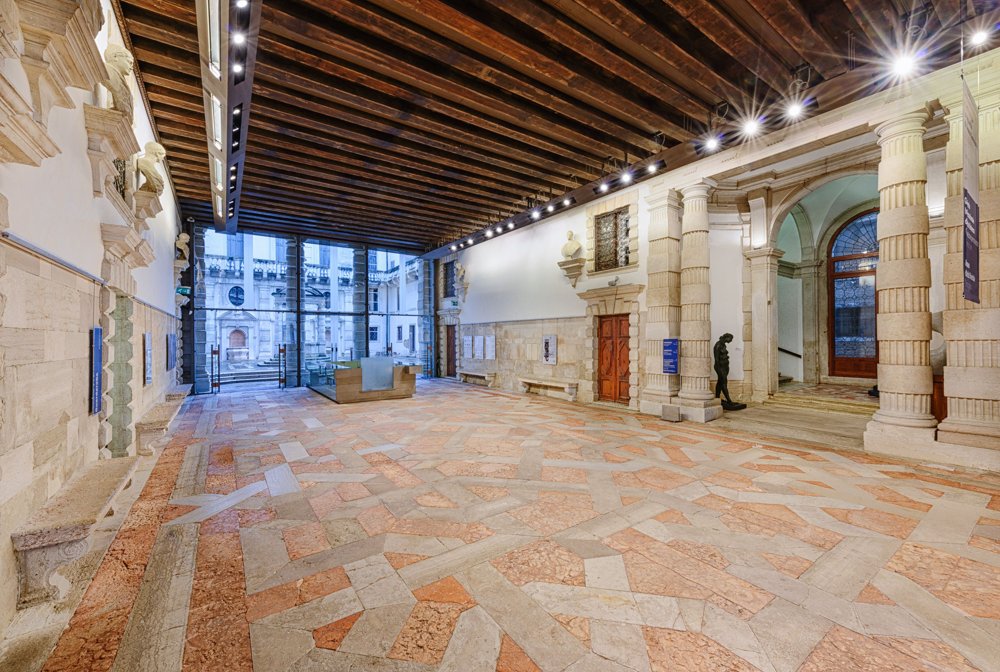

LUOGHI
Un itinerario tra musei, case museo e manifatture che custodiscono ancora oggi lo spirito decorativo del periodo dannunziano. Filtra per tipologia, poi seleziona un luogo dall'elenco o dalla mappa per scoprirne la storia.
-
01
Casa museo
Il Vittoriale degli Italiani
Gardone Riviera (BS)
La residenza-museo di Gabriele D'Annunzio, un complesso monumentale che intreccia eclettismo, simbolismo e gusto decorativo.
-
02
Museo
Triennale di Milano
Milano
Esempio di architettura razionalista con interni Dèco, oggi casa museo aperta al pubblico nel cuore di Milano.
-
03
Museo
Ca'Pesaro
Venezia, Santa Croce
Racconta la storia della tradizione vetraria muranese, con sale dedicate anche alla produzione del primo Novecento.
-
04
Museo
Museo Carlo Rizzarda
Feltre (BL)
Ospitato nell'antica officina del fabbro d'arte, conserva opere e strumenti della manifattura del ferro battuto Dèco.
-
05
Manifattura
Villa Pecori Giraldi
Borgo San Lorenzo (FI)
Ospitato nell'antica officina del fabbro d'arte, conserva opere e strumenti della manifattura del ferro battuto Dèco.